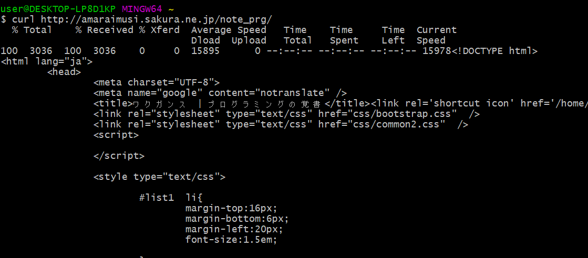

$ curl -V
$ curl -V curl 7.65.1 (x86_64-w64-mingw32) libcurl/7.65.1 OpenSSL/1.1.1c (Schannel) zlib/1.2.11 libidn2/2.2.0 nghttp2/1.38.0
$ curl http://amaraimusi.sakura.ne.jp/note_prg/
$ curl http://localhost/note_prg/
$ curl -OL ダウンロードするファイルのURLカレントディレクトリにファイルがダウンロードされる。
$ curl -OL http://amaraimusi.sakura.ne.jp/note_prg/index.html「index.html」がダウンロードされる。